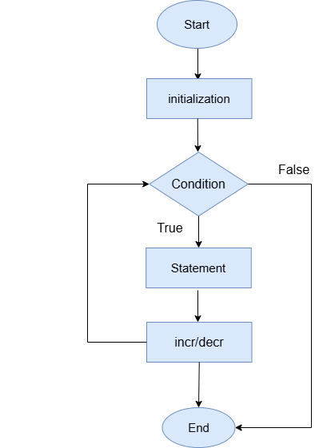

For loop in C
The for loop is used when the number of iterations is known beforehand.
Flowchart:-
Syntax:
for(initialization; condition; incr/decr) {
// Code to be executed
}
Example 1:
#include <stdio.h>
int main() {
for(int i = 1; i <= 5; i++) {
printf("%d\n", i);
}
return 0;
}
Output:
1 2 3 4 5
Example 2: Multiplication Table using for loop in C
#include <stdio.h>
int main() {
int num;
printf("Enter a number: ");
scanf("%d", &num);
for(int i = 1; i <= 10; i++) {
printf("%d x %d = %d\n", num, i, num * i);
}
return 0;
}
Output:
Enter a number: 5 5 x 1 = 5 5 x 2 = 10 5 x 3 = 15 5 x 4 = 20 5 x 5 = 25 5 x 6 = 30 5 x 7 = 35 5 x 8 = 40 5 x 9 = 45 5 x 10 = 50
Difference
When we say, "we know beforehand," it means we already know how many times a loop should run before the loop starts execution. This is where a for loop is most useful.
When we don't know beforehand how many times the loop should run, we usually use a while or do-while loop. This happens when the loop depends on user input or a condition that isn't known before execution.
Example: Keep taking user input until user enters 0
#include <stdio.h>
int main() {
int num;
while(1) {
// Infinite loop, will break when user enters 0
printf("Enter numbers (enter 0 to stop):\n");
scanf("%d", &num);
if (num == 0) {
break; // Stop the loop if user enters 0
}
printf("You entered: %d\n", num);
}
printf("Loop stopped because you entered 0.\n");
return 0;
}
Output:
Enter numbers (enter 0 to stop): 7 You entered: 7 Enter numbers (enter 0 to stop): 5 You entered: 5 Enter numbers (enter 0 to stop): 4 You entered: 4 Enter numbers (enter 0 to stop): 3 You entered: 3 Enter numbers (enter 0 to stop): 0 Loop stopped because you entered 0.
Explanation:
Here, we don't know beforehand how many times the user will enter numbers.
The loop continues until the user enters 0.
We use a while(1) infinite loop with a break statement to stop it when needed